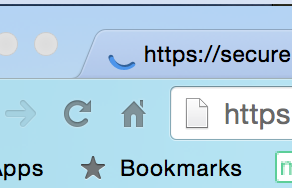

Getting Started: Create the Home Page in HTML: Part two
Activity Directions
Estimated Time: 45 minutes
Do you remember?
The activity will use the following html concepts or tags. These concepts were introduced in the first Khan Academy lesson. (Go do that now if you haven't already!):
Adding content.
To add content you need content! This will come from a few sources.
- Make sure to have the wireframe open and handy.
- You will find blocks of text you can use embedded in the intructions below. Watch for them! (You can modify these if you want)
- Images can be found here: images-1 or here: images-2 (or you can find some of your own)
Step 01: Complete Part One
Make sure to complete Create the Home page: Part one before continuing. This picks up right where that one left off.
With Part one done we should now have all of the "framing" done on our webpage. We have a place defined now for all the content that needs to be on the page. With that done we are now ready to actually add it! Remember to refer often to the wireframe as you are adding the content. The instructions will make much more sense if you are looking at the blueprint!
Step 02: Header Content
Let's work on the header first. Visit the image links above and find the logo you would like to use. Add the <img> tag to your page inside the <header>. Remember that the <img> tag has 2 required attributes. alt and src.
src should indicate the location of the image and alt="" should contain a short description about the image and is used primarily for the screen readers that the visually impaired use to browse the web.
The images on the provided sites are already the right size and are on a web server, so we just need to figure out what its URL is to add it to our page. Your browser makes it really easy to do that. If you click with the right mouse button on any image in the browser your computer will offer you several actions you can take. The one we are interested in right now is "Copy Image Address".
Copy the address for the logo image and paste the result into the src attribute in our image. the final tag should look something like this:
<img src="http://brothert.net/dryoar/images/dryoarlogo.png" alt="Dry Oar boating logo">You may be wondering what your site looks like. Remember that you can hit the "Show" button anytime to see the results of your work.
Step 03: Navigation
Now it's time to add the list of subpages that will eventually become links and provide our site's navigation.
Notice that I said 'list' there. One thing most people don't realize is that most navigation bars on most websites are made with an unordered list...the same one you learned how to use in this week's Khan Academy lesson. They are well disguised, but they really are lists.
The starter code provided already had the start of a list for you. Notice the
<ul> element with two <li> children. Add additional <li> elements for each link
that shows in your siteplan. I would let the
aboutme.html link drop to the bottom of the list.
Your <header> should look something like this:
<header>
<img src="http://brothert.net/dryoar/images/dryoarlogo.png" alt="Dry Oar boating logo">
<nav>
<ul>
<li><a href="index.html">Home</a></li>
...the rest of your list...
<li><a href="aboutme.html">About Me</a></li>
</ul>
</nav>
</header>
Step 04: Add a banner
Next is a wide banner image. Look through the images provided and choose one to add to your page in the
<div> we added earlier to hold it. Remember you can see what your site is looking like anytime by hitting
the view at the top of the page.
If your page does not update, click the refresh button (The tiny partial circle by the address line) on the Chrome browser.
Step 05: First row
Next we have 2 sections that have a headline, a paragraph, and an image (Make sure to refer to the wireframe). Earlier we created places for that content to go. Using the <h1>or <h2> tag add the first headline to the page inside of the first <div> in the first <section> (There is a headline on the wireframe you can use...or you can make up your own). Then use a <p> tag to add the following text: (or something similar...feel free to edit this :) ) inside of that same <div>
We believe that there is nothing like a river trip for relaxing. That is why we subscribe to the dry oar philosophy of boating. Keeping your oars dry for us means taking time to look around and notice the beauty that surrounds the rivers we love.Finally choose another picture from those provided and add it in the second <div> in that <section>.
Here is an example of how your section should look:
<section> <!-- this is the first row of content -->
<div>
<!-- left column content here -->
<h2>We run Rivers to relax.</h2>
<p>We believe that there is nothing like a river trip for relaxing... </p>
</div>
<div>
<!-- right column content here -->
<img src="picture1.jpg" alt="picture of a river">
</div>
</section>
Using personal images
You may be wondering how you might use a picture of your own on a website. It's actually pretty easy. An image needs to be on a webserver in order to be used on a website. Glitch is our webserver, so if you want to add a picture of your own you just need to upload it into Glitch as we did for the About Me activity. You might want to take an early look at the Optimizing Images activity before you do this though.
Step 06: Second Row
The next section is very similar...notice that the order of the elements is slightly different. In the second <section> tag add an image in the first <div>, then headline, and paragraph (the order is important) in the second <div>. Here is the text for this section:
That doesn't mean we don't also like rapids. Opposites in all things after all. We believe that that tenseness that comes when you are looking down the tongue of a big string of waves makes you appreciate the calm beautiful water that always follows even more.Step 07: Third row
The next section shouldn't be a problem at this point. In your last <section> add another headline and paragraph. Here is the text:
We invite you to come relax with us on one of the amazing rivers we visit. Check out our trips and let us know which one best suits you. We're waiting to hear from you!Step 08: Footer content
Finally let's add the content to the <footer>. The copyright comes first. Put it into the first element that you should have added in your <footer>. To make the copyright symbol we use a special code, there are many of these but we will just learn this one today: © Place that right before the 2015 so it will look like this:
<p>© 2017 Dry Oar<p>Let's go ahead and add your name as part of the footer as well. So the final html for the footer section should look something like this:
<footer>
<p>© 2017 Dry Oar - FirstName LastName </p>
<div> <!-- social media content here --> </div>
</footer>
Make sure to use the current year for the copyright! We will add the icons for the social media links later.
One more reminder! Our only goal is to get all of the content onto the page that is shown on the wireframe. Our Page will not look like the wireframe at this point. Each week will get us closer, but our page will not look exactly like the wireframe for several weeks, so patience will be required :)
Step 09
Make sure to view your web page online to make sure your changes are correct. Once verified, submit the URL from your browser that you use to view your page to iLearn.
Remember that the URL you should turn in for your site will look something like this (you would replace 'w16thompsond' with whatever your Glitch project name is):
http://w16thompsond.glitch.meAlways check that URL before you submit your assignments in Ilearn to make sure that all your changes show.
Grading
This activity will be graded using the following rubric:
- All of the content indicated on the wireframe is included. (Essentially you should have the following: 3 images, 3 headlines, 3 paragraphs, a logo, a list of words (these will be links eventually) and a copyright) 7pts
- Semantic, structural html used to organize and group html elements where asked for. 3pts